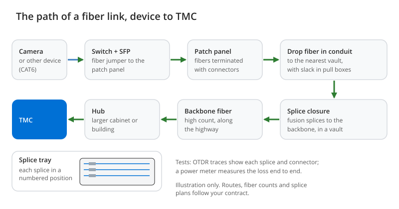

Fiber optic communications
In one sentence: fiber carries data from cameras, signs, detectors and controllers back to the Traffic Management Center.

Main parts
| Item | What it is for |
|---|---|
| Fiber optic cable | Backbone and distribution cables, single-mode, with the fiber count on the plans |
| Innerduct | Extra protection and organization inside conduit. See Conduit: types, sizes and fittings |
| Splice closures | Protect splices in vaults and pull boxes |
| Splice trays | Hold and organize individual splices |
| Patch panels | Terminate fibers in cabinets |
| Fiber jumpers | Connect patch panels to equipment |
| Labels | Identify every fiber and port. See Labeling and identification |
Installation
Pull with tension control, leave slack loops where specified, splice by fusion, terminate in patch panels, and follow the splice diagram on the plans. See Phase 7: Fiber splicing and termination.
Testing
- OTDR: shows each event (splice, connector, break) along the fiber and its loss.
- Insertion loss with a power meter and light source: the total loss of each link.
The contract sets wavelengths, directions and pass limits. Clean and inspect every connector before testing.
PM notes
Fiber work is often subcontracted. Agree on the splice plan, the test report format and the as-built splice diagram before work starts.
Common mistakes / what Caltrans actually checks
- Exceeding pulling tension or bend radius.
- Dirty connectors failing loss tests.
- Splice diagram not updated to the field.